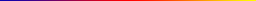

filters.colorinterp
The color interpolation filter assigns scaled RGB values from an image based on a given dimension. It provides three possible approaches:
You provide a minimum and maximum, and the data are scaled for the given dimension accordingly.
You provide a k and a mad setting, and the scaling is set based on Median Absolute Deviation.
You provide a k setting and the scaling is set based on the k-number of standard deviations from the median.
You can provide your own GDAL-readable image for the scale color factors, but a number of pre-defined ramps are embedded in PDAL. The default ramps provided by PDAL are 256x1 RGB images, and might be a good starting point for creating your own scale factors. See Default Ramps for more information.
Note
filters.colorinterp will use the entire band to scale the colors.
Example
[
"uncolored.las",
{
"type":"filters.colorinterp",
"ramp":"pestel_shades",
"mad":true,
"k":1.8,
"dimension":"Z"
},
"colorized.las"
]
{kind=link}
Image data with interpolated colors based on Z dimension and pestel_shades
ramp.
Default Ramps
PDAL provides a number of default color ramps you can use in addition to providing your own. Give the ramp name as the ramp option to the filter and it will be used. Otherwise, provide a GDAL-readable raster filename.
awesome_green
{kind=link}
black_orange
{kind=link}
blue_orange

blue_hue

blue_orange
blue_red
{kind=link}
heat_map

{kind=link}
pestel_shades

Options
- ramp
The raster file to use for the color ramp. Any format supported by GDAL may be read. Alternatively, one of the default color ramp names can be used. [Default: “pestel_shades”]
- dimension
A dimension name to use for the values to interpolate colors. [Default: “Z”]
- minimum
The minimum value to use to scale the data. If none is specified, one is computed from the data. If one is specified but a k value is also provided, the k value will be used.
- maximum
The maximum value to use to scale the data. If none is specified, one is computed from the data. If one is specified but a k value is also provided, the k value will be used.
- invert
Invert the direction of the ramp? [Default: false]
- k
Color based on the given number of standard deviations from the median. If set, minimum and maximum will be computed from the median and setting them will have no effect.
- mad
If true, minimum and maximum will be computed by the median absolute deviation. See filters.mad for discussion. [Default: false]
- mad_multiplier
MAD threshold multiplier. Used in conjunction with k to threshold the differencing. [Default: 1.4862]
- where
An expression that limits points passed to a filter. Points that don’t pass the expression skip the stage but are available to subsequent stages in a pipeline. [Default: no filtering]
- where_merge
A strategy for merging points skipped by a ‘where’ option when running in standard mode. If
true, the skipped points are added to the first point view returned by the skipped filter. Iffalse, skipped points are placed in their own point view. Ifauto, skipped points are merged into the returned point view provided that only one point view is returned and it has the same point count as it did when the filter was run. [Default:auto]